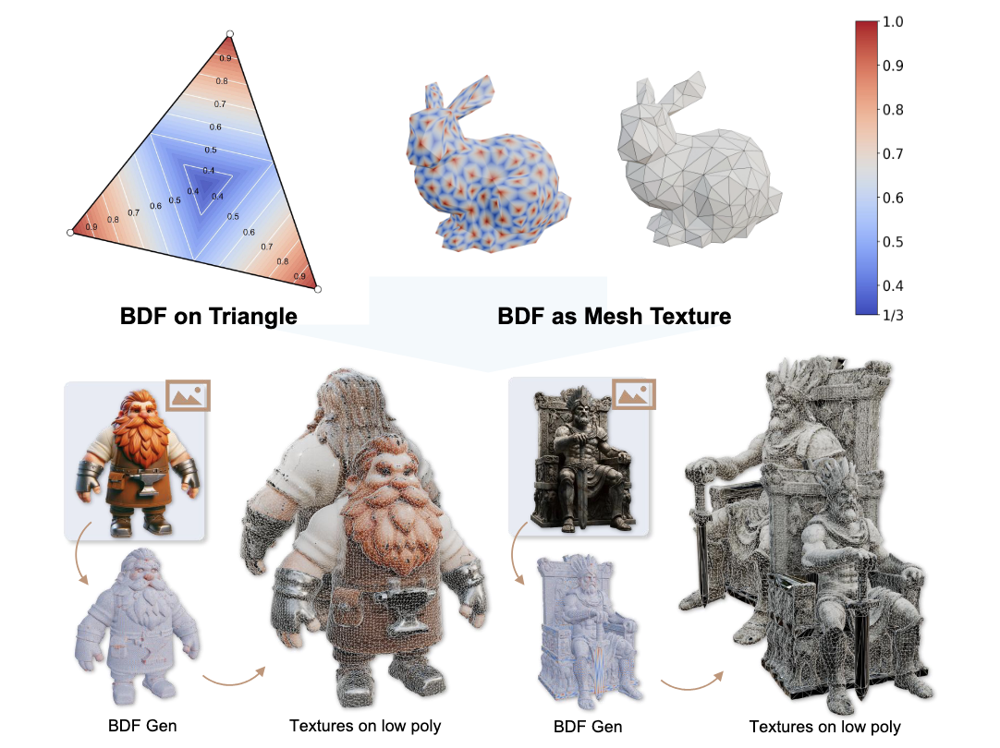

NeurIPS 2026Mesh BDF: Barycentric Dominance Field for 3D Native Mesh Generation
Advances in Neural Information Processing Systems (NeurIPS), 2026 Spotlight
@inproceedings{song2026meshbdf,
title = {Mesh BDF: Barycentric Dominance Field for 3D Native Mesh Generation},
author = {Song, Gaochao and Weng, Haohan and Zhang, Luo and Zhao, Zibo and Gao, Shenghua},
booktitle = {Advances in Neural Information Processing Systems},
year = {2026}
}